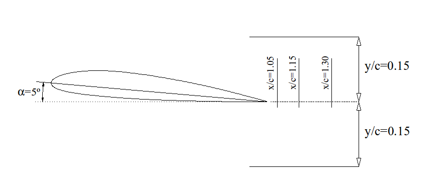

Statistical process of experimental measurements
Contents
Statistical process of experimental measurements#
1. Description of the data#
In our lab some measurements of local velocity were made with a CTA probe (see for example the Wikipedia page for hot-wire anemometry, or the Dantec information)
The measurements were performed in the wake behind a NACA profile with 5 degrees incidence angle

The data provided have been acquired at a distance of, approximately, \(\frac{x}{c} \approx 1.1\), where \(c = 265 \,\text{mm}\) is the profile’s chord. and there are 17 \(y\) positions, from \(y=-4 \,\text{cm}\) to \(y=+4 \,\text{cm}\), in intervals of 5 mm. In each point the velocity has been acquired for a second with a frequency of 1 kHz (that is, 1000 velocities in each point). It has been measured only the \(x\) component (main flow direction).
Most of the topics covered in this notebook have been consulted in the CFD-online Wiki page “Introduction to turbulence”
import pandas as pd
import numpy as np
We define the names for the columns, according with the definition
columns = []
for i in range(17):
y = (i-8)*5
columns.append("y = "+str(y)+"mm")
turbulenceData = pd.read_csv('TurbVel.csv',delimiter=',', index_col=0,names=columns)
turbulenceData.index.name="Time"
turbulenceData.head()
| y = -40mm | y = -35mm | y = -30mm | y = -25mm | y = -20mm | y = -15mm | y = -10mm | y = -5mm | y = 0mm | y = 5mm | y = 10mm | y = 15mm | y = 20mm | y = 25mm | y = 30mm | y = 35mm | y = 40mm | |
|---|---|---|---|---|---|---|---|---|---|---|---|---|---|---|---|---|---|
| Time | |||||||||||||||||
| 0.000 | 20.916005 | 21.013892 | 19.890369 | 20.564816 | 19.247617 | 20.242762 | 20.171834 | 19.326923 | 17.711748 | 17.954515 | 19.112384 | 19.247617 | 18.955669 | 19.624038 | 18.989162 | 20.337691 | 17.901476 |
| 0.001 | 20.757920 | 21.124463 | 19.878740 | 20.528820 | 19.258909 | 20.278330 | 20.124676 | 19.417902 | 16.314876 | 17.534186 | 19.213710 | 19.292888 | 18.922264 | 19.704760 | 18.833365 | 20.313920 | 17.743229 |
| 0.002 | 20.661140 | 21.087559 | 20.101135 | 20.492846 | 19.213710 | 20.337691 | 20.136438 | 19.360977 | 13.902128 | 18.590930 | 19.202443 | 19.349631 | 18.933382 | 19.716296 | 18.601871 | 20.254624 | 17.922668 |
| 0.003 | 20.794288 | 21.099841 | 20.207287 | 20.421109 | 19.315560 | 20.219094 | 20.124676 | 19.349631 | 12.840679 | 18.340470 | 19.281544 | 19.372364 | 18.955669 | 19.785785 | 18.503472 | 20.278330 | 17.471901 |
| 0.004 | 20.952667 | 21.099841 | 20.349604 | 20.480892 | 19.292888 | 20.313920 | 20.148242 | 19.326923 | 15.086783 | 18.243283 | 19.247617 | 19.349631 | 18.944540 | 19.785785 | 17.838033 | 20.195451 | 18.135857 |
If we want to save this data in another file, keeping the information for index, columns, etc… instead of csv, we can use a more powerful format, as HDF. This is a Hierarchical Data Format, widely used to store big amounts of data in a organized way. More information, in the HDF group web page or in Wikipedia.
Warning
In ordert to save as HDF you will need the pytables module installed.
Just run
pip install tables
turbulenceData.to_hdf("TurbVel.hdf","w")
We can then get again the data with the format provided
newTurbulenceData = pd.read_hdf("TurbVel.hdf")
newTurbulenceData
| y = -40mm | y = -35mm | y = -30mm | y = -25mm | y = -20mm | y = -15mm | y = -10mm | y = -5mm | y = 0mm | y = 5mm | y = 10mm | y = 15mm | y = 20mm | y = 25mm | y = 30mm | y = 35mm | y = 40mm | |
|---|---|---|---|---|---|---|---|---|---|---|---|---|---|---|---|---|---|
| Time | |||||||||||||||||
| 0.000 | 20.916005 | 21.013892 | 19.890369 | 20.564816 | 19.247617 | 20.242762 | 20.171834 | 19.326923 | 17.711748 | 17.954515 | 19.112384 | 19.247617 | 18.955669 | 19.624038 | 18.989162 | 20.337691 | 17.901476 |
| 0.001 | 20.757920 | 21.124463 | 19.878740 | 20.528820 | 19.258909 | 20.278330 | 20.124676 | 19.417902 | 16.314876 | 17.534186 | 19.213710 | 19.292888 | 18.922264 | 19.704760 | 18.833365 | 20.313920 | 17.743229 |
| 0.002 | 20.661140 | 21.087559 | 20.101135 | 20.492846 | 19.213710 | 20.337691 | 20.136438 | 19.360977 | 13.902128 | 18.590930 | 19.202443 | 19.349631 | 18.933382 | 19.716296 | 18.601871 | 20.254624 | 17.922668 |
| 0.003 | 20.794288 | 21.099841 | 20.207287 | 20.421109 | 19.315560 | 20.219094 | 20.124676 | 19.349631 | 12.840679 | 18.340470 | 19.281544 | 19.372364 | 18.955669 | 19.785785 | 18.503472 | 20.278330 | 17.471901 |
| 0.004 | 20.952667 | 21.099841 | 20.349604 | 20.480892 | 19.292888 | 20.313920 | 20.148242 | 19.326923 | 15.086783 | 18.243283 | 19.247617 | 19.349631 | 18.944540 | 19.785785 | 17.838033 | 20.195451 | 18.135857 |
| ... | ... | ... | ... | ... | ... | ... | ... | ... | ... | ... | ... | ... | ... | ... | ... | ... | ... |
| 0.995 | 21.087559 | 21.248015 | 19.349631 | 20.007225 | 19.785785 | 19.832212 | 19.612552 | 18.844470 | 17.010890 | 18.877784 | 17.234927 | 19.937022 | 20.373413 | 18.800155 | 17.451182 | 18.922264 | 19.808986 |
| 0.996 | 21.013892 | 21.334855 | 19.474945 | 19.972095 | 19.774176 | 19.855463 | 19.601036 | 18.844470 | 16.960352 | 18.082340 | 17.513403 | 20.183621 | 20.148242 | 18.800155 | 17.440815 | 19.532177 | 20.207287 |
| 0.997 | 21.050677 | 21.310005 | 19.440708 | 20.054129 | 19.704760 | 19.867080 | 19.578058 | 18.888878 | 16.373577 | 18.623839 | 17.680285 | 19.960385 | 20.148242 | 18.329634 | 17.461523 | 19.797365 | 20.160017 |
| 0.998 | 21.001619 | 21.297609 | 19.452103 | 20.054129 | 19.727874 | 19.832212 | 19.681671 | 18.933382 | 15.899636 | 18.039642 | 17.440815 | 19.693194 | 20.709496 | 18.211012 | 17.607118 | 19.601036 | 20.183621 |
| 0.999 | 21.062977 | 21.272798 | 19.497812 | 20.112884 | 19.612552 | 19.855463 | 19.658606 | 19.045057 | 16.570464 | 17.173579 | 17.327294 | 19.532177 | 20.721574 | 18.050324 | 17.378822 | 19.486393 | 20.065853 |
1000 rows × 17 columns
del(newTurbulenceData)
We can easily plot velocity time series in any point
turbulenceData["y = 0mm"].plot(ylabel="u")
<AxesSubplot:xlabel='Time', ylabel='u'>
And also we can get the main features
statData = turbulenceData.describe()
statData
| y = -40mm | y = -35mm | y = -30mm | y = -25mm | y = -20mm | y = -15mm | y = -10mm | y = -5mm | y = 0mm | y = 5mm | y = 10mm | y = 15mm | y = 20mm | y = 25mm | y = 30mm | y = 35mm | y = 40mm | |
|---|---|---|---|---|---|---|---|---|---|---|---|---|---|---|---|---|---|
| count | 1000.000000 | 1000.000000 | 1000.000000 | 1000.000000 | 1000.000000 | 1000.000000 | 1000.000000 | 1000.000000 | 1000.000000 | 1000.000000 | 1000.000000 | 1000.000000 | 1000.000000 | 1000.000000 | 1000.000000 | 1000.000000 | 1000.000000 |
| mean | 21.104367 | 21.044473 | 20.757320 | 20.316435 | 20.247308 | 20.270573 | 19.733937 | 19.493431 | 17.798975 | 17.059820 | 19.138614 | 19.377307 | 19.330135 | 19.228752 | 19.026175 | 19.121565 | 18.570242 |
| std | 0.187226 | 0.228523 | 0.762061 | 0.776583 | 0.536762 | 0.262442 | 0.251107 | 0.491538 | 1.124547 | 0.988907 | 0.305786 | 0.354726 | 0.462051 | 0.478166 | 0.694788 | 0.662401 | 0.860208 |
| min | 20.468907 | 20.207287 | 18.634798 | 18.866662 | 19.123603 | 19.704760 | 19.168608 | 18.297226 | 12.824605 | 13.765816 | 17.234927 | 17.764286 | 17.245155 | 17.265657 | 16.373577 | 16.511184 | 16.101291 |
| 25% | 20.989390 | 20.989390 | 20.322845 | 19.751012 | 19.797365 | 20.065853 | 19.566596 | 19.075895 | 17.327294 | 16.491465 | 18.977981 | 19.213710 | 19.109572 | 18.989162 | 18.678760 | 18.722815 | 17.983749 |
| 50% | 21.099841 | 21.112168 | 20.733695 | 20.225018 | 20.272393 | 20.219094 | 19.704760 | 19.532177 | 18.071674 | 17.173579 | 19.168608 | 19.440708 | 19.338256 | 19.258909 | 19.045057 | 19.258909 | 18.689782 |
| 75% | 21.173826 | 21.186155 | 21.062977 | 20.624988 | 20.676252 | 20.492846 | 19.913683 | 19.937022 | 18.569031 | 17.774791 | 19.315560 | 19.601036 | 19.658606 | 19.520739 | 19.477807 | 19.601036 | 19.227838 |
| max | 21.647802 | 21.447038 | 23.727658 | 23.157105 | 21.774209 | 20.842895 | 20.361487 | 20.661140 | 19.843817 | 19.727874 | 20.077620 | 20.230943 | 20.721574 | 20.444995 | 20.830752 | 20.337691 | 20.492846 |
statData.loc["mean"].plot(title="Mean velocities")
<AxesSubplot:title={'center':'Mean velocities'}>

2. Computation of turbulence intensities#
Remember the definition of turbulence intensity:
where the numerator is, precisely, the std index of our statistical data.
turbIntensity = statData.loc["std"]/statData.loc["mean"]
turbIntensity.plot(title="Turbulence Intensity")
<AxesSubplot:title={'center':'Turbulence Intensity'}>
3. Computation of fluctuations#
By definition, in each point the fluctuation of velocity is
turbVelFluct = turbulenceData-statData.loc["mean"]
turbVelFluct.plot(subplots=True,layout=(4,5),figsize=(20,20),color="b",sharey=True);
4. Computation of turbulence kinetic energy#
The turbulent kinetic energy (TKE), \(k\) is computed as
and we should need also \(v'\) and \(w'\). We are then only computing the contribution of \(u'\) to TKE. Note that although main flow is in the \(x\) direction and components of velocities \(u\) and \(v\) can be neglected, it is not possible for fluctuating velocities \(v'\) and \(w'\). They can be as important as \(u'\). We can make the assumption that turbulence, at small scales, is isotropic and, hence \(\overline{u'}^2 \approx \overline{v'}^2 \approx \overline{w'}^2 \) and
TKE = 1.5*statData.loc["std"]**2
TKE.plot()
<AxesSubplot:>
5. Some time scales#
For the moment, we focus on \(y = 0 \,\text{mm}\) time series. The TKE in this point is
k = TKE.loc["y = 0mm"]
k
1.8969099438209787
The turbulence Reynolds number, locally defined in this point, is calculated with a length scale, which can be estimated, for now, as the larger eddy in the flow, of the order of the profile’s chord.
We need also the viscosity of air.
nu = 1.5e-5 # m^2/s
c = 0.265 # m
Re_t = np.sqrt(k)*c/nu
print('Re_t = {:.5g}'.format(Re_t))
Re_t = 24332
The Kolmogorov time scale can be estimated as
where \(\varepsilon\) is the energy dissipation rate, that can be estimated as
(it is considered that energy is injected at larger scales)
epsilon = k**1.5/c
epsilon # m^2/s^3
9.858803164295542
And the Kolmogorov time scale is, approximately,
tau_k = np.sqrt(nu/epsilon)
tau_k
0.0012334840317132275
that is of the order of our time resolution.
An integral time scale is defined with the autocorrelation of time signal.
Computing autocorrelation is very time consuming, but pandas has a plotting method that performs this computation much faster. The problem is that the output is directly a plot, and it is tricky to get the autocorrelation values from it.
uPrime = turbVelFluct["y = 0mm"].values
pd.plotting.autocorrelation_plot(uPrime);
autocorr = pd.plotting.autocorrelation_plot(uPrime).get_lines()[5].get_xydata()
We change the “lag” \(x\) numbers with time lag, form the Data Frame
autocorr[:,0]=turbVelFluct.index.values
And also zoom for a narrower \(x\) span. Note that the pandas function gives the normalized correlation \(\rho(\tau)=\frac{R(\tau)}{R(0)} \).
import matplotlib.pyplot as plt
plt.plot(autocorr[:,0],autocorr[:,1],'o-')
ax = plt.gca()
ax.set_xlim(0,0.2)
ax.set_ylabel(r"$R(\tau)$")
ax.set_xlabel(r"\tau")
ax.set_title("Autocorrelation for y = 0 mm");
The integral time scale is defined as the integral of autocorrelation function
from scipy import integrate
T = integrate.trapezoid(autocorr[:,1],autocorr[:,0])
T
-0.0009022706750520157
It gives a very small (negative) value because the number of samples (1000) is still very low to get a good autocorrelation for large lag. It is assumed that after the second or third root, the autocorrelation is zero. So, we change the limits of integration:
T = integrate.trapezoid(autocorr[0:50,1],autocorr[0:50,0])
T
0.0038772428514055016
This method has the inconvenient that there is not the lag 0. It should be included in the very first point.
Alternatively, the statistic models package provides a better way to estimate autocorrelation, even with the option of choosing the number of lags for the computation.
import statsmodels.api as sm
rho = sm.tsa.acf(uPrime,nlags=50,fft=False)
rho
array([ 1.00000000e+00, 8.04541350e-01, 5.73932067e-01, 4.34197820e-01,
3.66033657e-01, 3.52249759e-01, 3.37537587e-01, 3.17333281e-01,
3.02811025e-01, 2.88497039e-01, 2.57130409e-01, 1.92849680e-01,
1.36546784e-01, 1.03957571e-01, 8.32353264e-02, 8.38373665e-02,
7.86032962e-02, 6.10277646e-02, 4.65580669e-02, 1.99746693e-02,
-9.26964982e-03, -2.42545223e-02, -2.72775430e-02, -1.88646766e-02,
-9.32923832e-03, -1.87112884e-02, -2.96367351e-02, -3.06195932e-02,
-2.30782249e-02, -1.88316863e-02, -1.35537818e-02, -3.97915265e-03,
-1.47696686e-02, -3.43907404e-02, -4.63080674e-02, -4.27395164e-02,
-3.48795246e-02, -3.31582168e-02, -3.40160661e-02, -3.72166240e-02,
-3.81736376e-02, -2.71323604e-02, -7.79263410e-03, 2.27309238e-03,
5.12746823e-04, -1.00859193e-02, -1.05058317e-02, 9.75072762e-03,
1.29933159e-02, 7.25182676e-03, 8.90439779e-03])
import statsmodels.graphics.api as smg
smg.tsa.plot_acf(uPrime,lags=200,fft=False)

The computation of the integral time is more accurate because of the 0-lag point.
T = integrate.trapezoid(rho[0:50],autocorr[0:50,0])
T
0.004771435414182847
6. Histogram and PDF#
PDF is the Probability Density Function. It defines the probability of an event between to values. For example, if the pdf of our velocity fluctuation is \(f(x)\), then the probability that a value of the fluctuation lies between \(u'_1\) and \(u'_2\) is
import scipy.stats as stats
X = stats.norm(0,statData["y = 0mm"].loc["std"])
X_samples= X.rvs(1000)
F, bins, patches = plt.hist(uPrime,bins=100,density=True) # Integral = 1
plt.hist(X_samples,bins=100,density=True);
Since we have included the option density=True, the integral (moment of order 0) of this PDF is 1.
deltaUPrime = np.diff(bins)
M0 = np.sum(F*deltaUPrime)
M0
1.0
The moment of order \(n\) is defined as
The moment of order 1 is the average of the samples, that should be 0
UPrimePDF = bins[:-1] + deltaUPrime/2
UPrimePDF
M1 = np.sum(UPrimePDF*F*deltaUPrime)
M1
-0.00034572943200417974
The moment of order 2 is the variance of the samples, that should be the square of the standard deviation given by pandas before…
M2 = np.sum(UPrimePDF**2*F*deltaUPrime)
M2
1.2646119129824565
We can check it easily with the statistical data
statData["y = 0mm"].loc["std"]**2
1.2646066292139857
The moment of order 3 is
The skewness of the \(u'\) distribution is defined as
M3 = np.sum(UPrimePDF**3*F*deltaUPrime)
M3
-1.9216881739273899
S = M3/M2**1.5
S
-1.3512851823741956
The moment of order 4 is
The kurtosis of the \(u'\) distribution is defined as
For a normal distribution, it should be 3 (check it)
M4 = np.sum(UPrimePDF**4*F*deltaUPrime)
M4
8.337551070336458
K = M4/M2**2
K
5.213435079007364
7. Power spectrum#
Finally, from the time series signal, we can get the spectrum in frequency by performing a Fast Fourier Transform
E = np.abs(np.fft.fft(uPrime))
plt.plot(E);
We compute the frequencies range, providing the periode of the data acquisition
freq = np.fft.fftfreq(uPrime.size,0.001)
plt.plot(freq,E);

and we keep only half the data, since it is symmetric
E = E[:len(E)//2]
freq = freq[:len(freq)//2]
plt.plot(freq,E);
and, finally, we compute the energy, which is the square of the velocity
P = E**2
plt.plot(freq,E)
[<matplotlib.lines.Line2D at 0x7fa8b7496340>]
Let’s plot it in a log-log graph with the -5/3 Kolmogorov’s law as a reference line for the energy decay in frequency
fig, ax = plt.subplots(1)
ax.set_ylim(1,1e5)
ax.loglog(freq,P)
f_plot = np.logspace(1,2.7,100)
f_ref = 10 #Just a Frequancy and Energy of reference for the -5/3 law
P_ref = 1e5
P_plot = P_ref/f_ref**(-5/3)*f_plot**(-5/3)
ax.loglog(f_plot,P_plot,'--')
ax.text(30,20000,'-5/3');
This spectrum can also be computed via the velocity autocorrelation
rho = sm.tsa.acf(uPrime,nlags=999,fft=False)
smg.tsa.plot_acf(uPrime,lags=999,fft=False)
Pr = np.abs(np.fft.fft(rho))
plt.plot(Pr);
freq = np.fft.fftfreq(rho.size,0.001)
Pr = E[:int(len(Pr)/2)]**2
freq = freq[:int(len(freq)/2)]
fig, ax = plt.subplots(1)
ax.set_ylim(1,1e6)
ax.loglog(freq,Pr)
f_plot = np.logspace(1,2.7,100)
f_ref = 30
P_ref = 50000
P_plot = P_ref/f_ref**(-5/3)*f_plot**(-5/3)
ax.loglog(f_plot,P_plot,'--')
ax.text(100,10000,'-5/3');
try:
%load_ext watermark
except:
!pip install watermark
%watermark -v -m -iv
Python implementation: CPython
Python version : 3.9.12
IPython version : 8.2.0
Compiler : GCC 7.5.0
OS : Linux
Release : 5.4.0-113-generic
Machine : x86_64
Processor : x86_64
CPU cores : 8
Architecture: 64bit
numpy : 1.21.5
pandas : 1.4.2
matplotlib : 3.5.1
statsmodels: 0.13.2
scipy : 1.7.1